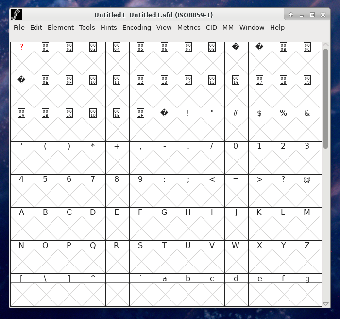

As an avid opensource user, I tend to do my work exclusively on Linux for many years now, where the software tends to be both libre and open. This means that there is quite a large volume of programs and applications which are fairly capable and competitively priced; i.e. free.
Recently I was curious about font design, and decided to create my own. Years ago I recalled using FontForge, so it became my first choice.
A quick peek at the man page reveals all of the supported formats:
The program fontforge allows you to create and modify
font files, accepting input in the following formats (with
associated file extensions appearing in parentheses).
* Glyph Bitmap Distribution (.bdf)
* Macintosh resource fonts (.dfont, .bin, .hqx)
* OpenType (.otf)
* fontforge spline font database (.sfd)
* POSTSCRIPT, which includes:
o ASCII format (.pfa)
o Binary format (.pfb)
o CID-keyed fonts,
Adobe convention primarily for Asian characters (.cid, .otf)
o POSTSCRIPT Type 0 (.ps)
o POSTSCRIPT Type 3 (.ps)
* Scaleable vector graphics fonts (.svg)
* TeX bitmap (.pk)
* TrueType (.ttf, .ttc)
* X11 bitmap (.pcf)
So chances are whatever format that is of interest to you is likely supported, whether TrueType font or bitmap font or SVG font.
Upon running the program, the end-user is presented with the following GUI:
Admittedly it has began to show its age. I still remember that old GUI from the very early 2000s and it has not changed too much over the years. Nonetheless, it is one of the more feature-rich opensource apps. Those familiar with GIMP or other such tools will feel at home after a short while.
To create a new font, press the "New" button at the bottom, otherwise browse and open an existing font. In this case, we want to start off with a brand new font. Doing so displays the following screen:
A bit confusing at first, however, each of those slots is an entry for a typographical "glyph". By default, new fonts created are set to ISO standard Latin-1, which actually covers a broad range of non-Asian characters and it applies to most of Western Europe and Scandinavia; though some languages like Polish miss out.
That said, many other styles are supported, including Unicode fonts, though this tutorial will stick to Latin-1 for the sake of simplicity.
To start drawing, click on one of the [X] boxes below the glyph of choice, for example T in this case. Upon doing so the following screen will appear:
A lack of text labels means that the beginning is just the sweet, sweet learning curve. In general, the icons on the left-hand-side allow for the drawing of shapes, polygons, curves, bezier forms and vertices. At the bottom-left corner there are 3 checkboxes to switch the guide, foreground or background to on-off.
Quite a few additional options are available via the drop-down menu, including bitmap glyphs, width setting and bearings. Initially probably only the Element->Font Info and Element->Glyph Info are worth pointing out since there the font can be renamed and metadata can be editted.
Going back to the glyph draw screen again, of note is the largest square in the middle, surrounded by guide levels. This is where the character needs to placed. Let's start off with a simple polygon using the rectangle tool. Click the small blue rectangle button, and draw out two adjacent shapes in the form of a T as demostrated below.
Note that FontForge has a number of font validation tests that it will run as you are drawing out the various glyphs you will need for your font. It is strongly recommended you take these into account during the font development process. If you want, you can have the validation screen open continuously while you work, by going back to the main font screen and clicking Element->Validation->Validate. This will display a list of the currently broken glyphs and the specific errors in question.
The lines and the vertices must not overlap. Zooming in on where the rectangles meet shows exactly why; part of the lower rectangle is just inside of the upper rectangle.
Select the two top vertices and use the keyboard or mouse to move them down.
There, our letter is fixed! With validation being satisfied, go back to the main font screen and take a look at our whole font thus far.
With the capital T glyph complete, what needs to be done now is to spend several more hours drawing out all of the remaining characters. Good luck!